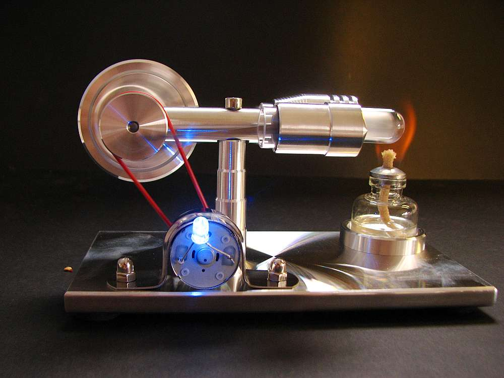
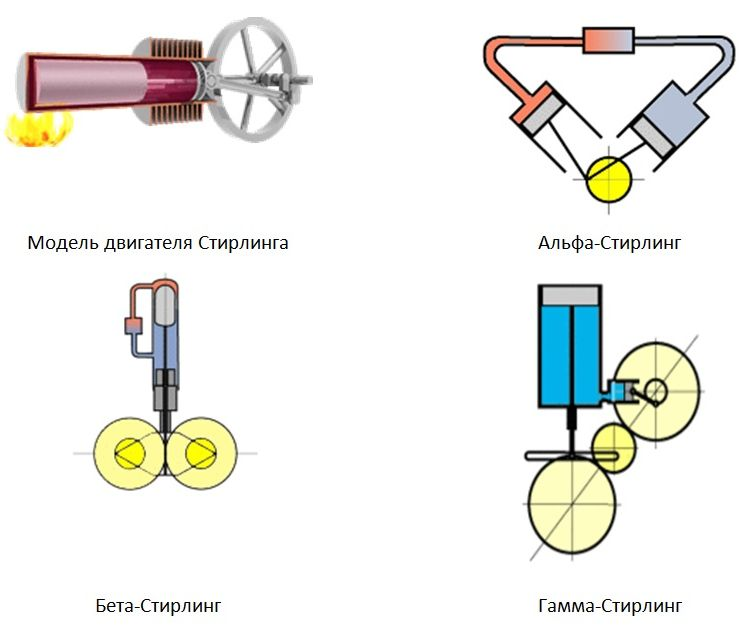
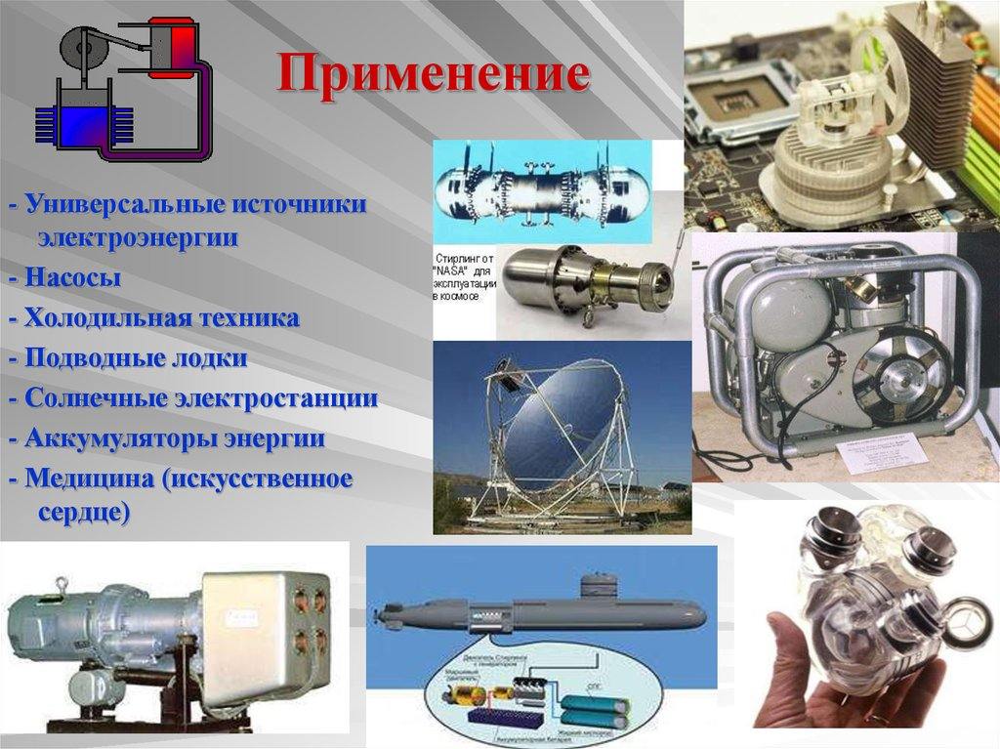

Что такое двигатель Стирлинга?
Двигатель Стирлинга представляет собой тепловую машину внешнего сгорания которая работает на замкнутом цикле с использованием разности температур для преобразования тепла в механическую работу. В отличие от двигателей внутреннего сгорания, он не требует топлива внутри цилиндров и может использовать любые источники тепла, от солнца до отходов производства.

История изобретения
Шотландский священник Роберт Стирлинг запатентовал двигатель 27 сентября 1816 года (британский патент № 4081), назвав его "экономайзером". Идея возникла как альтернатива опасным паровым котлам эпохи промышленной революции, прототипы "воздушных двигателей" существовали с XVII века (например, у Джона Стивенсона в 1794 году), но ключевым новшеством Стирлинга стал регенератор для улавливания и возврата тепла.
Принцип работы
Цикл Стирлинга идеальный, изотермическое расширение/сжатие газа и изобарные нагрев/охлаждение с регенерацией тепла.
Основные фазы:

Современное применение
